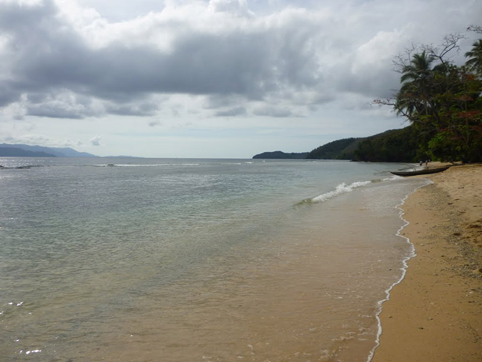
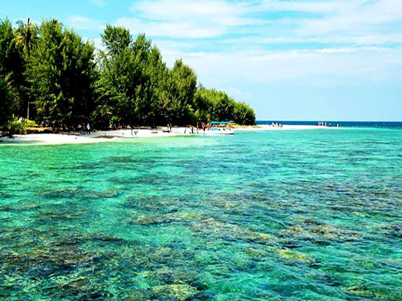

Pancaran sinar matahari yang hangat, dan aroma laut yang berasal dari Samudera Pasifik ini akan benar-benar terasa ketka berada di Pantai Amai. Pantai ini memang cukup jauh dari keramaian kota Jayapura, namun itulah yang membuatnya sering kali di kunjungi oleh para wisatawan yang menginginkan ketenangan sambil menikmati keindahan alam yang ada di Pantai Amai. Lokasi pantai sendiri terletak di Distrik Depapre, sekitar 5 km dari Depapre, Kota Jayapura.
Jarak antara Pantai Amai dan pusat kota Jayapura ini memang tidak dekat, namun juga tidak terlalu jauh, untuk kesana dengan kendaraan pribadi anda, maka akan menghabiskan waktu kurang lebih sekitar 2 jam perjalanan, hal ini karena jarak antara keduanya kurang lebih sekitar 60 kilometer. Cukup jauh memang jaraknya. Jika anda berangkat dari Jakarta, anda akan melakukan penerbangan selama 7 jam lamanya.
Pantai Amai memiliki pasir putih dan air yang sangat jernih, meskipun ombak menggulung, Anda tidak akan menemukan air yang keruh. Sehingga sangat mungkin untuk Anda mandi dan bermain-main dengan pasir putihnya yang sangat lembut. Pantai Amai ini masih lengang dan sepi oleh pengunjung, namun sebenarnya ini justru menguntungkan untuk para pengunjung yang hanya satu dua karena bisa melakukan banyak aktivitas sendiri tanpa di ganggu.
Hanya dengan ongkos parkir kendaraan dan tiket masuk sebesar Rp 25.000*) untuk mobil beserta penumpangnya, anda sudah bisa menikmati segarnya Pantai Amai yang sangat indah ini. Dari area parkir akan melewati jalan setapak menuju hutan kurang lebih 200 meter, setelah itu akan ketemu sebuah aliran sungai, barulah terlihat Pantai Amai. Disekitar pantai juga terdapat arena untuk bermain volly pantai, jadi bagi anda yang gemar berolahraga, anda bisa bermain volly bersama rekan-rekan anda disana tanpa di pungut biaya sepeserpun, hanya saja anda harus membawa bola sendiri.
Anda juga bisa melakukan beberapa kegiatan olahraga lainya di Pantai Amai ini, misalnya saja seperti snorkeling, diving, surfing, dan juga beberapa olahraga air lainnya. Di lokasi pantai, memang sudah menyediakan penyewaan perlengkapannya, namun persediaannya terbatas. Beberapa pepohonan yang ada di pinggir pantai juga terlihat bergoyang-goyang indah meski anginnya tidak begitu kencang. Di pinggiran Pantai Amai ini juga tidak terdapat batu-batu karang, jadi anda bisa bebas berlarian di tepi pantai karena anda hanya akan merasakan pasirnya yang lembut serta segarnya air laut.
Ada satu hal yang menjadi keunikan dari Pantai Amai ini, yaitu muara sungainya. Ya, tempat tersebut adalah sebuah perbatasan laut dan sungai, yaitu tempat dimana air asin dan air tawar bertemu, lokasi muara ini berada di ujung Pantai Amai, jadi anda bisa memanfaatkan air tawar ini untuk membilas tubuh setelah berenang di air asin. Tidak hanya itu saja, di pulau ini berdiri pondok-pondok yang dapat digunakan untuk beristirahat. Objek wisata ini sangat cocok utk wisata akhir pekan bersama keluarga.
Wisatawan banyak yg datang ke pantai ini utk mandi dan berjemur di bawah teriknya panas matahari. Jika Anda ingin berjemur setelah mandi, maka akan menambah kesegaran yang Anda rasa apabila Anda menikmati air kelapa muda yang bisa Anda beli di sekitar pantai. Sangat memungkinkan juga untuk Anda untuk bermalam, karena terdapat banyak penginapan di pinggir Pantai Amai. Pasir putih yang menghampar segera menyambut anda. Airnya yang begitu jernih seakan memanggil-manggil anda untuk menyentuhkan kaki anda di sana.
Pantai yang satu ini sungguh luar biasa uniknya, sebab deretan Samudera Pasifik, Pantai Amai dengan pasir putihnya yang berkilauan bersanding pula dengan pantai air tawar. Tidak jauh dari pantai terlihat kampung Amai yang penduduknya ramah menyambut para pengunjung yang datang. Tidak ada wajah garang di raut wajah mereka, hanya senyum manis yang selalu mengembang di mulut mereka.